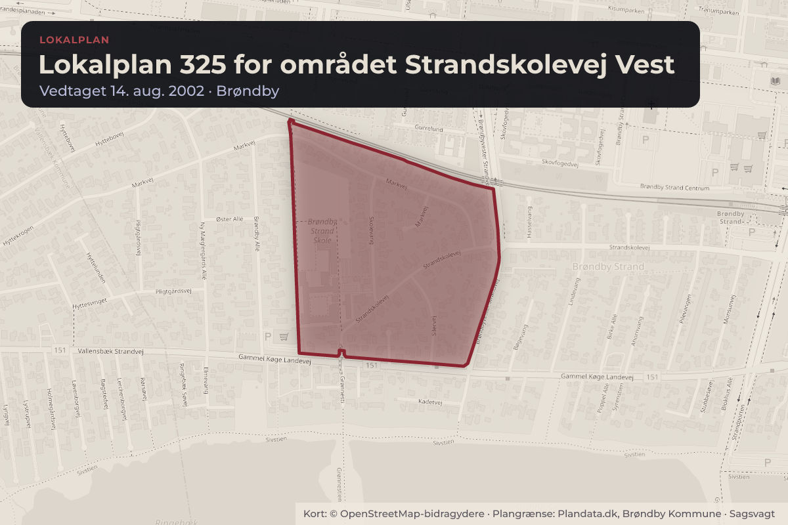
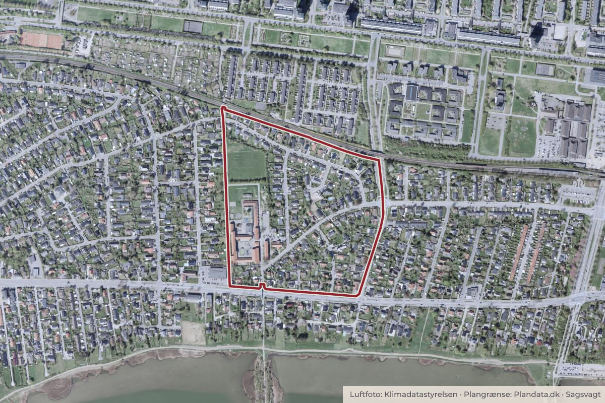

Besluttet 23. september, Teknik- og Planudvalget, Brøndby
Lokalplan 325 – området Strandskolevej vest
Byggeri og lokalplanerSkoler og børnKultur og fritid

Kort: © OpenStreetMap-bidragydere. Plangrænse: Plandata.dk, Brøndby Kommune.

Kort fortalt
- Forslaget
- Teknik- og Planudvalget beslutter at bevare den nuværende lokalplan 352 og
- Hvem
- Teknik- og Planudvalget, Brøndby Kommune
- Hvornår
- Onsdag 23. september 2026
- Status
- Besluttet. Indstillingen tiltrædes, idet lokalplanen dog er 325.
Er noget forkert her? Skriv til os
Læs hele sagen Kommunens egen tekst
Indstilling
Teknik- og Miljøforvaltningen indstiller,
1. at Teknik- og Planudvalget beslutter at bevare den nuværende lokalplan 352 og
dennes eksisterende bevaringsbestemmelser.
Baggrund
Formålet med lokalplan 325 (bilag 1) for området Strandskolevej Vest er bl.a. at sikre den
bevaringsværdige bebyggelse opført af arkitekten Thorvald Dreyer i 1958-1959 omkring
Markvej. Grundejerforeningen for Skoleparken G/F samt flere grundejere i området mener, at
forvaltningen administrerer lokalplan 325 for restriktivt i forbindelse med ansøgninger om
dispensation.
Senest har ejeren af ejendommen Markvej 41 i Brøndby Strand i forbindelse med en
tilbygning søgt dispensation til udvendig isolering med efterfølgende pudsning af facaden
samt forhøjelse af taget på et mindre bryggers. De ansøgte ændringer er i strid med
lokalplanens bestemmelser, herunder formålet, hvorfor forvaltningen har meddelt afslag på
ansøgningen, jf. bilag 2.
Generelt om forvaltningens håndtering af byggeansøgninger og tidligere
ombygninger i bebyggelsen opført af Thorvald Dreyer ved Markvej
I forbindelse med kommunens sagsbehandling skal det bl.a. sikres, at et projekt overholder
den gældende lokalplan. Når kommunen modtager en byggeansøgning, vurderer
forvaltningen, om projektet lever op til lokalplanens bestemmelser, herunder om nyt byggeri
passer ind i området, som beskrevet i § 7.3.1 i lokalplan 325.
Den gældende lokalplan 325 giver et tydeligt grundlag for vurdering af, hvad der kan tillades.
Kommunen kan dog meddele dispensation til visse ændringer, hvis de gennemføres på en
måde, der fastholder det oprindelige udtryk. Bilag 3 viser kort over området og de
Side 1
karakteristiske træk ved bebyggelsen. Forvaltningen har været i dialog ansøgere om de
seneste projekter i området for at sikre, at det oprindelige udtryk fastholdes, samtidig med at
der er mulighed for at bygge nyt og omdanne. Det gælder bl.a. Markvej 14 og 31, hvor der er
gennemført ændringer og forbedringer på bygningerne, uden det er i strid med lokalplanen.
Forvaltningens vurdering
Det er forvaltningens vurdering, at der ikke bør udarbejdes en ny lokalplan for området.
Lokalplanen medvirker til at sikre, at områdets særlige kendetegn fastholdes og ikke
udvandes over tid, fx ved at husene får vidt forskellige udtryk. En ny lokalplan med bredere
bestemmelser vil gøre det svært at fastholde den bevaringsværdige bebyggelse, og det må
forventes at bebyggelsen over tid vil ændre karakter.
Der er generelt en øget opmærksomhed på at fastholde kommunens særlige kulturmiljøer,
og derfor er der fokus på, at bevaringsbestemmelserne i lokalplanerne overholdes. Netop
transformation af parcelhusgrunde og sammenhængen med kulturmiljøer har været drøftet af
Teknik- og Miljøudvalget på mødet den 22. oktober 2025. Her blev det særligt drøftet,
hvordan de særlige kendetegn ved Brøndbys parcelhuskvarter kan bevares. Teknik- og
Planudvalget har den 22. april 2026 behandlet orientering om prioritering af fysisk
planlægning i Brøndby Kommune, hvoraf det fremgår, at forvaltningen ikke for nuværende
for ressourcer til at opdatere allerede gældende lokalplaner. Såfremt der iværksættes en ny
lokalplan, vil forvaltningen prioritere i andre, eksisterende planlægningsønsker.
Kulturmiljøregistreringer i Brøndby Kommune herunder Markvej
Kulturmiljøerne og den bebyggede kulturarv er en væsentlig del af Brøndbys historie. Derfor
har forvaltningen i samarbejde med Forstadsmuseet i 2025 foretaget en registrering af de
kulturmiljøer, der findes i Brøndby Kommune.
Overordnet er følgende noteret om området:
På den østlige del af Markvej ligger et boligkvarter med oprindeligt 53 små enfamilieshuse
i røde tegl og med taghældning, tegnet og opført af Thorvald Dreyer i 1950’erne. Husene
og deres placering følger helt særlig struktur, rytme og udstykningsplan, som er meget
tydelig. Rytmen er dog påvirket af senere tids nybyggeri, der ikke tager hensyn til
bebyggelsen i placering og skala.
Registreringerne er et arbejdsredskab og vil indgå i den kommende Kommuneplan med bl.a.
anbefalinger til, hvad der skal ske for de enkelte kulturmiljøer i den videre planlægning f.eks.
udarbejdelse af mere præcise bevarende lokalplaner.
Økonomiske konsekvenser
Ingen bemærkning.
Konsekvenser for grøn omstilling
Dispensationer til større ombygninger, nedrivninger og lignende medfører et øget forbrug af
materialer og energi til ændringer og nyopførelse, hvilket belaster klima og ressourcer.
Side 2
Beslutning
Indstillingen tiltrædes, idet lokalplanen dog er 325.
Kilde: Brøndby Kommune, Teknik- og Planudvalget, referat fra mødet onsdag 23. september 2026, punkt 3. Læs den originale sag hos kommunen.